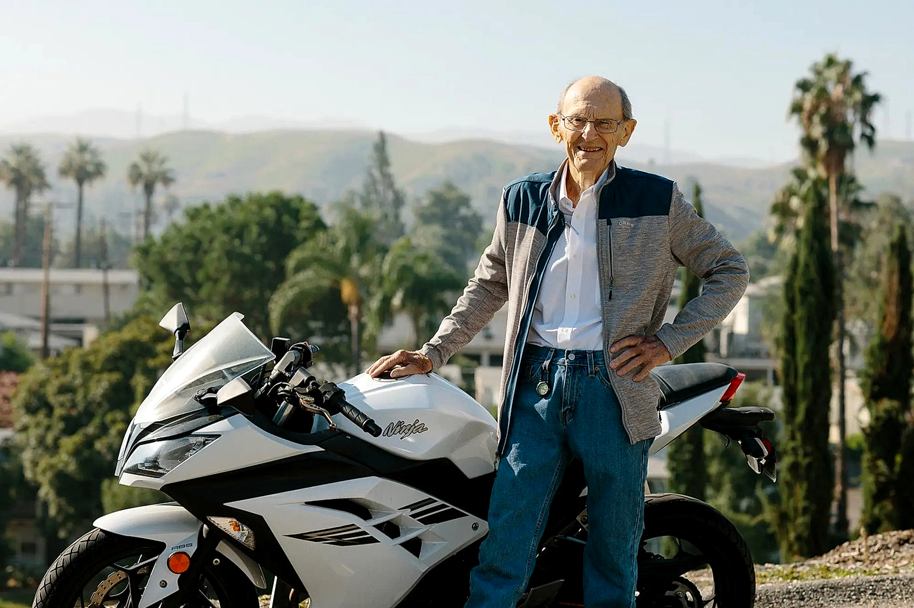
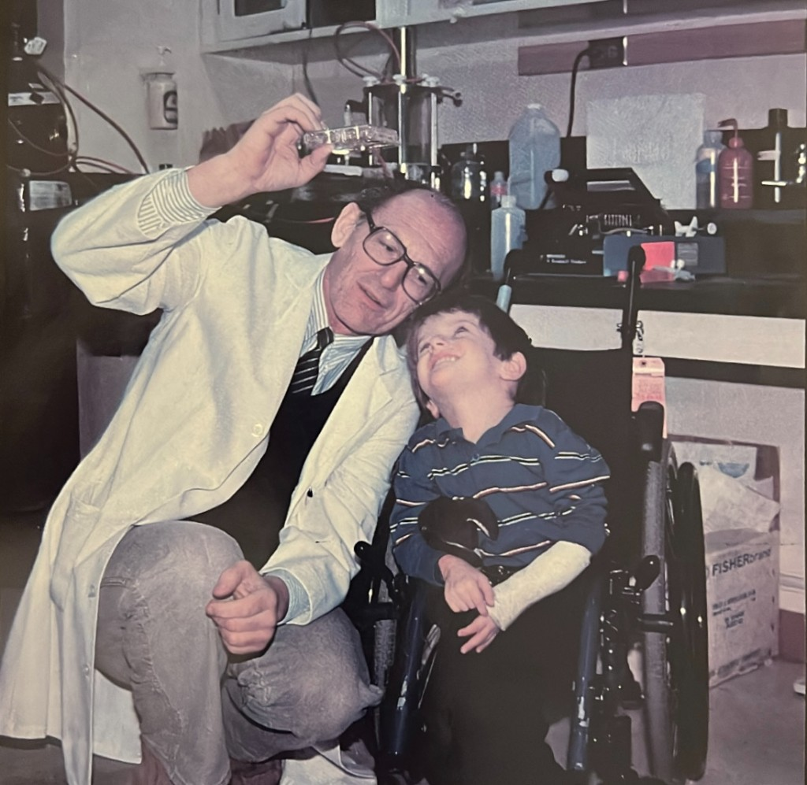
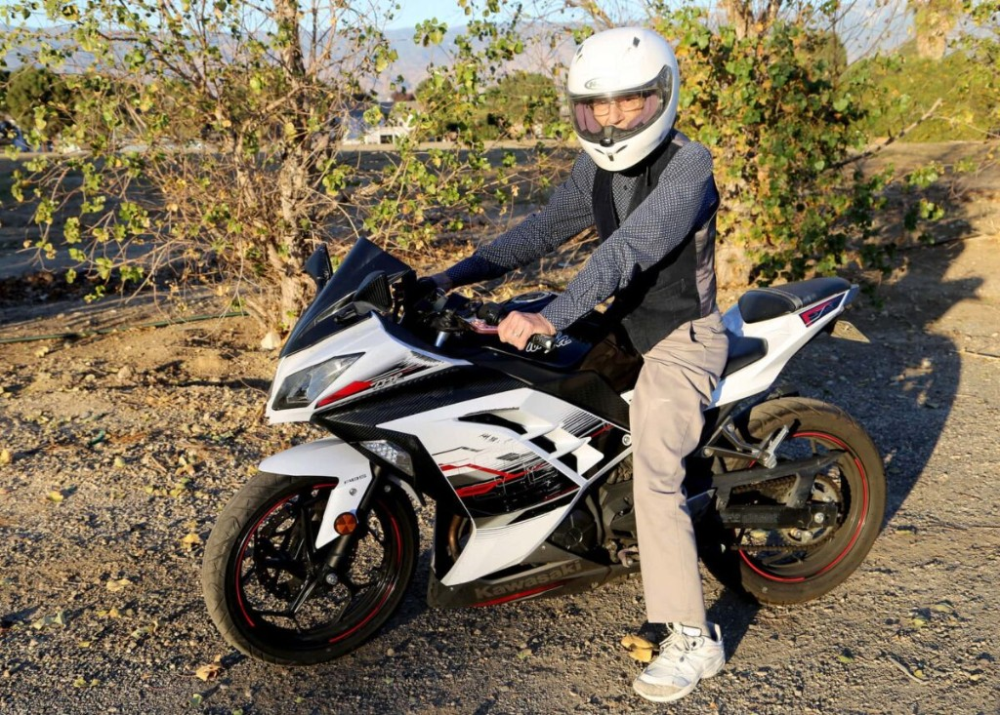

The author
David J. Baylink, MD
Distinguished Professor of Medicine at Loma Linda University. Head of the Division of Regenerative Medicine. Author of more than six hundred scientific papers — and, at last, of one novel.
Loma Linda University School of Medicine
A life measured in questions
He took his BA at Walla Walla University in 1953 and his MD at Loma Linda University in 1957, and he has been at a bench, or beside a bed, more or less ever since. His research record on the university’s books runs from 1963 to the present day — better than sixty years of continuous work.
The science has moved through bone and calcium endocrine signaling, sepsis, gene therapy, and non-embryonic stem cells: the ones, as he puts it, that don’t harm fetuses. He has held federal research funding continuously across the Department of Veterans Affairs, the National Institutes of Health, and the Department of Defense, and he holds two distinguished professorships alongside an appointment in the School of Dentistry.
What the curriculum vitae does not record is the rest of it. He plays tennis. He skis. He rollerblades. He hikes the foothills after church on Sabbath. He does not drink coffee — “I just drink a lot of water and get on my bike, go to work.” And on Friday afternoons, the rider in the blue shirt and red bowtie splitting traffic on a Kawasaki Ninja is a man in his nineties on his way home from the laboratory.
Asked to account for his longevity, he offers two reasons and no others: fairly good genetics, and he loves his job.
I’m addicted to motorcycles.David J. Baylink, to the Adventist Review
Why a novel
“I write about the excitement of being a researcher.”
He has said for years that the only thing that slows him down is writing fiction — and that even the fiction runs at speed. The Gift is the result: an autobiographical novel about a physician-scientist who arranges a life so that nothing can interrupt the work, and then discovers what the work was for.
The research in it is real. The people around the research are not, or not entirely. He is unusually direct about the difference, and about the way the book was made — both of which he sets out plainly in his author’s note, before the first chapter rather than after the last.
Photographs
Sixty years, four pictures



By the numbers
The record
Source: Loma Linda University faculty experts profile, 1963–2025.
Keep in touch
News about the book
Readings, signings, and word of what comes next.